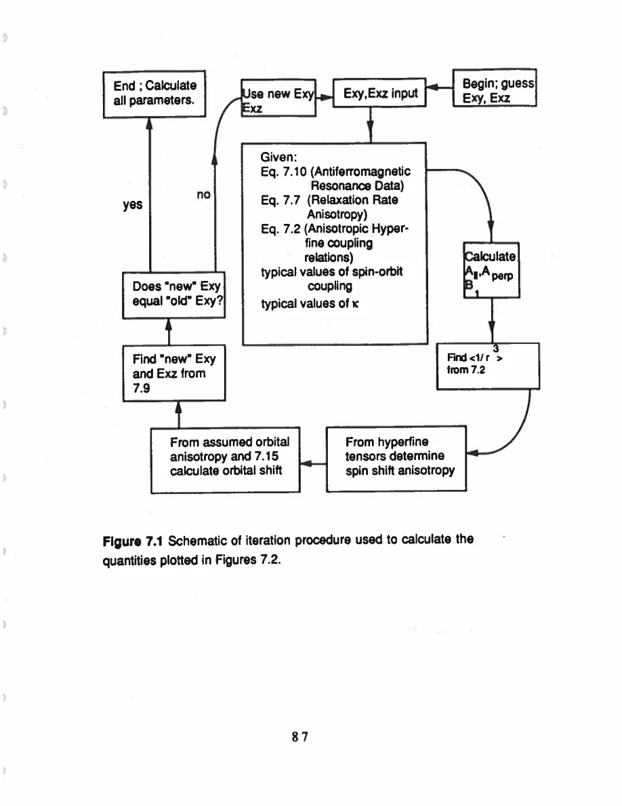
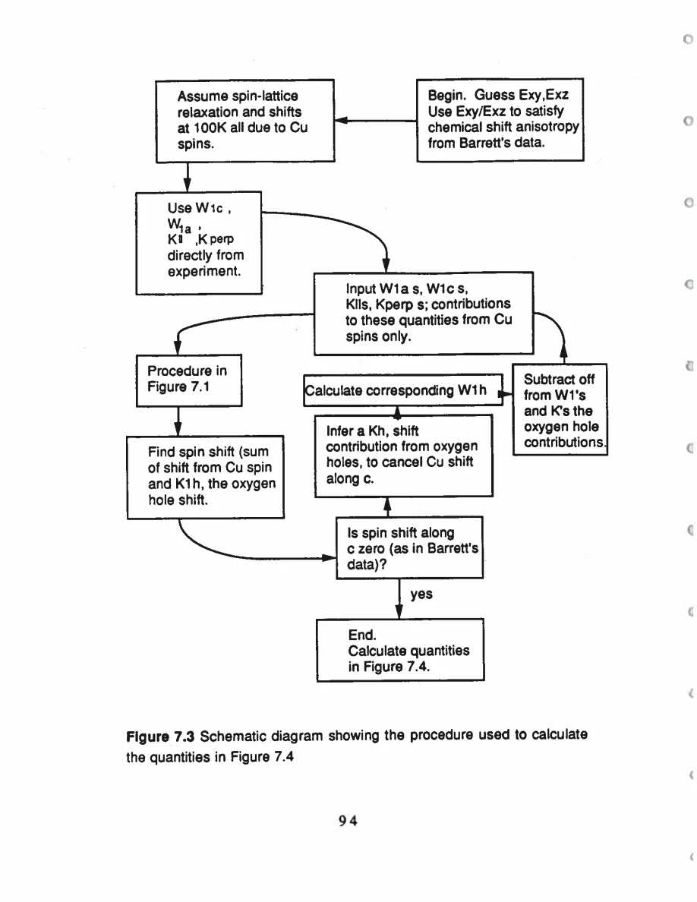
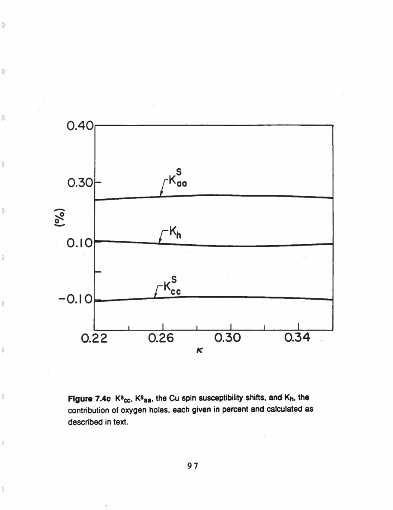
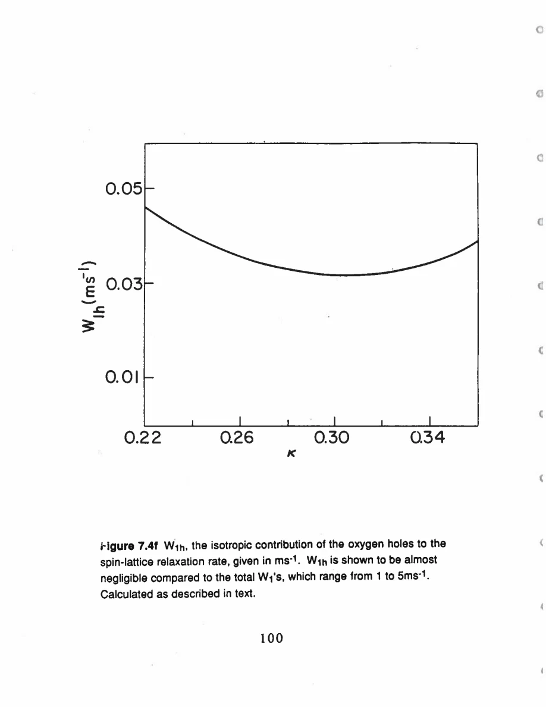

Pennington · supplied source 1989 · chapter unit
8. The plane-Cu self-consistent model
The Cu-local-moment picture survives a small oxygen-hole correction, but zero total spin shift can conceal canceling channels.
The question: How do normal and superconducting shift constraints alter the plane interpretation?
Before you start: the terms you need
- Plane Cu / chain Cu: the two crystallographic copper sites in YBCO
- EFG: electric field gradient, which couples to a nuclear quadrupole moment
- Magnetic shift: the field-proportional frequency change after quadrupole contributions are separated
- W₁: the thesis’s elementary satellite population-transition rate, not automatically 1/T₁
- Redfield contribution: echo decay generated by the fluctuating fields also responsible for population recovery
- Transferred hyperfine coupling: a nuclear spin senses electronic spins through orbital mixing or intervening atoms
See → explain → check
Follow the idea in 3 pictures.
Picture 1 / 3
Different observables constrain different combinations
Look for: Follow three inputs into a common model.
Swipe across the picture to read every label, or enlarge it below.
- Recovery
- Shift
- AF resonance
Model relationships depend on hyperfine assumptions.
Recovery, shifts and antiferromagnetic resonance supply complementary constraints.
Check the original: PDF p. 83 · PDF p. 84 · PDF p. 85 · PDF p. 99
Picture 2 / 3
A zero total can hide two terms
Look for: Compare the signs of the revised c-axis spin contributions.
Swipe across the picture to read every label, or enlarge it below.
- Cu spin along c
- Oxygen holes
- Total spin along c
Source calculation near κ≈0.28; not separate direct measurements.
Cu and oxygen-hole terms can cancel while both are nonzero.
Check the original: PDF p. 88 · PDF p. 89 · PDF p. 109
Picture 3 / 3
Separate small shift from small relaxation
Look for: One channel contributes differently to two observables.
Swipe across the picture to read every label, or enlarge it below.
- Plane shift correction
- Plane recovery correction
Outputs of the source iteration.
The inferred hole shift matters while its W₁ contribution remains small.
Check the original: PDF p. 89 · PDF p. 90 · PDF p. 112
Explain it back.
Try answering aloud before opening the explanation.
Why do shifts and rates constrain different hyperfine combinations?
A time-averaged polarization shifts through a coupling sum, while independently fluctuating-field powers involve coupling squares.
Does zero c-axis spin shift establish zero Cu-local susceptibility?
No. In this source’s revised model a positive oxygen-hole contribution cancels a negative Cu-spin contribution.
Go deeper Follow the full argument
Build an overconstrained model
The model combines an anisotropic on-site Cu hyperfine tensor, an approximately isotropic transferred coupling to four neighboring Cu spins, and an isotropic local-spin susceptibility. Atomic Cu²⁺ parameters include a core-polarization factorκ, spin-orbit coupling and orbital excitation energies. The measured recovery anisotropy constrains sums of squared hyperfine fields, while the spin shift constrains a sum of the on-site and transferred couplings. Antiferromagnetic YBCO resonance information supplies another constraint involving their difference. The author solves these relationships iteratively, requiring the inferred orbital energies to agree with the energies used to calculate chemical shifts. It is useful that different observables constrain different combinations; it is also a reminder that the solution inherits the assumed neighbor statistics and atomic-physics inputs.
PDF p. 81 · PDF p. 82 · PDF p. 83 · PDF p. 84 · PDF p. 85 · PDF p. 86 · PDF p. 99
Add superconducting-state information
A first pass neglects oxygen-hole effects and explains the normal tensors with reasonable local-moment parameters. The thesis then incorporates external superconducting-state shift measurements. Interpreting low-temperature residual shifts as orbital contributions gives a plane orbital-shift ratio inconsistent with equal excitation energies; the revised calculation uses an energy ratio near 1.32. It also needs the total plane spin shift along c to vanish under the external constraint. The Cu-local-moment contribution itself is negative along c, so a small positive isotropic oxygen-hole Knight contribution cancels it. The iteration subtracts that inferred hole contribution from the total shifts and from recovery through the Korringa relation, then recomputes the Cu parameters. Thus a measured total spin shift close to zero does not imply no local magnetic response: two nonzero terms can offset. This decomposition is conditional on how the superconducting data separate spin, orbital and internal-field contributions.
PDF p. 87 · PDF p. 88 · PDF p. 89 · PDF p. 106 · PDF p. 109
Read the outputs as parameter dependence
At a representativeκ≈0.28, the revised model yields a Cu fluctuation scaleτ₀≈1.3×10⁻¹⁵ s and an oxygen-hole recovery contribution around 0.04 ms⁻¹, small compared with plane W₁ values 1–5 ms⁻¹. The plots show inferred quantities versus an assumed core-polarization parameter. They are not temperature sweeps, spatial maps or measured dispersion curves. The small hole contribution changes the shift decomposition appreciably while leaving most plane recovery attributed to Cu-local-spin fluctuations. The extra echo coupling supplies additional evidence that electronic exchange persists in the oxygenated material. Together the data favor a state near the local-moment end of a continuous localized-to-itinerant spectrum in the author’s interpretation. They do not establish a unique pairing theory. Indeed the thesis emphasizes the tension between local-moment normal-state behavior and spin susceptibility suppression in the superconducting state as an unresolved theoretical problem.
PDF p. 89 · PDF p. 90 · PDF p. 93 · PDF p. 94 · PDF p. 100 · PDF p. 101 · PDF p. 102 · PDF p. 103 · PDF p. 104 · PDF p. 105 · PDF p. 107 · PDF p. 108 · PDF p. 109 · PDF p. 110 · PDF p. 111 · PDF p. 112
Translate the mathematics Essential equations and their meaning
W₁⊥/W₁∥=(A∥²+A⊥²+8 B₁²)/(2 A⊥²+8 B₁²)
Symbols: A: anisotropic on-site field coupling; B₁: coupling to each of four neighbors; ∥: orbital symmetry axis
Source Eq 7.7 under uncorrelated spin-field and isotropic susceptibility assumptions; ∥ corresponds to c for plane Cu.
K_Cu-spin,α=(Aα+4 B₁)χ_s
Symbols: χ_s: modeled isotropic local-spin susceptibility; A,B₁ in consistent field-coupling units
Explains why static shifts weight a sum while recovery weights squares. The expression omits the added oxygen-hole and orbital terms.
Read the evidence Guided original source pages

PDF p. 99

PDF p. 106

PDF p. 109

PDF p. 112
What the evidence supports—and where it stops
- The spin-fluctuation time is inferred within a fast local-moment model.
- Self-consistency does not make the atomic parameter ranges or decomposition unique.
- The referenced superconducting-state shifts introduce assumptions beyond the new normal-state experiment.
Source version, reading coverage and preservation
All 146 scanned pages rendered and locally OCR-recognized with Windows.Media.Ocr. Research prose of PDF 13–139 read in full; source-specific formulas and selected complete page figures inspected individually. PDFpage=printedpage+12.
Reviewed body pages: 13, 14, 15, 16, 17, 18, 19, 20, 21, 22, 23, 24, 25, 26, 27, 28, 29, 30, 31, 32, 33, 34, 35, 36, 37, 38, 39, 40, 41, 42, 43, 44, 45, 46, 47, 48, 49, 50, 51, 52, 53, 54, 55, 56, 57, 58, 59, 60, 61, 62, 63, 64, 65, 66, 67, 68, 69, 70, 71, 72, 73, 74, 75, 76, 77, 78, 79, 80, 81, 82, 83, 84, 85, 86, 87, 88, 89, 90, 91, 92, 93, 94, 95, 96, 97, 98, 99, 100, 101, 102, 103, 104, 105, 106, 107, 108, 109, 110, 111, 112, 113, 114, 115, 116, 117, 118, 119, 120, 121, 122, 123, 124, 125, 126, 127, 128, 129, 130, 131, 132, 133, 134, 135, 136, 137, 138, 139. Acknowledgments and biography are not teaching material. Bibliography not independently verified against external publications. Mathematical derivations are summarized at final-result level; not every algebraic line independently reconstructed.
Source SHA-256: 85b6d3c8d20ccc23476bf72473860248d5228e16892afefa8dec6c7054d43c26. Original file bytes preserved locally, and in this room’s original download.
Thesis - Pennington - 1989 - Single crystal NMR of high temperature superconductors.pdf